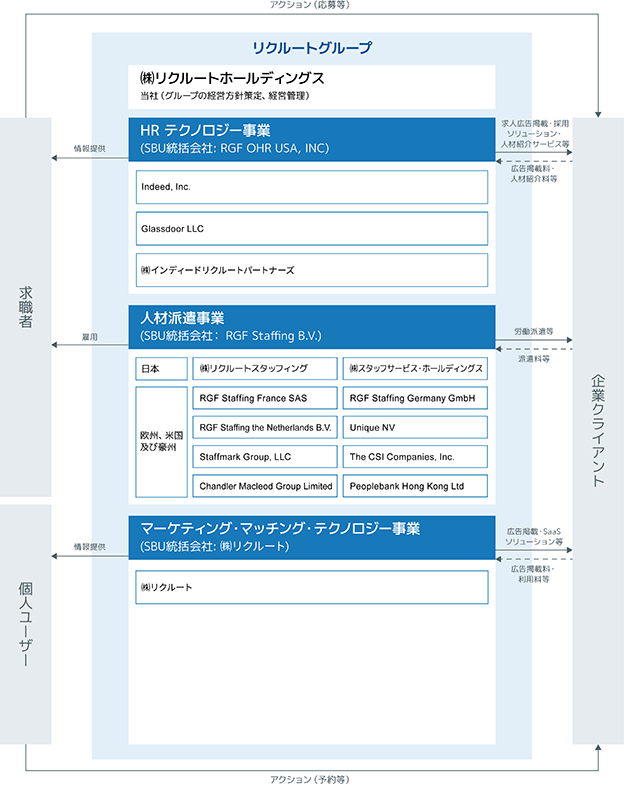

(注1) 当社は、IFRSに基づいて連結財務諸表を作成しています。
(注2) 従業員数には臨時従業員は含みません。
(2) 提出会社の経営指標等
(注1) 従業員数には臨時従業員は含みません。
(注2) 最高・最低株価は、2022年4月3日以前は東京証券取引所市場第一部における株価を、2022年4月4日以降は東京証券取引所プライム市場における株価を記載しています。
2 【沿革】
(注1) *は連結子会社(2026年3月31日現在)です。
(注2) 表内の「現」は、2026年3月31日現在の名称です。
(注3) QRコードは㈱デンソーウェーブの登録商標です。
3 【事業の内容】
当社グループは、1960年に日本において大学新聞に企業の求人広告を掲載し、学生に求人情報を提供することから始まりました。設立以来、主に個人ユーザーと企業クライアントを結びつけるプラットフォームを創造し運営しています。
現在は、テクノロジーとデータを活用し、マッチングの更なる効率性向上と高速化に注力し、グローバル市場における個人ユーザーに最適な選択肢を提供し、企業クライアントの更なる業務効率化を支援しています。
また当社グループは、個人ユーザーのプライバシー保護を含めたデータセキュリティ・プライバシー対応の強化を企業活動の重要な基盤として位置づけ、体制や施策を整備しています。
当社グループは、HRテクノロジー、人材派遣及びマーケティング・マッチング・テクノロジーの3つの戦略ビジネスユニット(Strategic Business Unit、以下「SBU」)ごとに統括会社を設置した経営体制により、各SBUが迅速に事業戦略を遂行すると同時に、当社グループ経営戦略であるSimplify Hiring、Help Businesses Work Smarter、そしてProsper TogetherをSBU間で連携しながら遂行しています。当社が持株会社としての機能の集中と強化を図り、戦略の策定と推進、適切なグループガバナンスやモニタリングの実行により、更なる企業価値の向上を実現することを目指しています。当連結会計年度末において当社の連結子会社は218社、関連会社は6社です。
なお、当社グループは2025年4月1日付で、マッチング&ソリューション事業(2026年3月期からマーケティング・マッチング・テクノロジー事業に名称を変更)のうち人材領域をHRテクノロジー事業に移管しました。
(1) セグメント別事業内容
① HRテクノロジー事業
HRテクノロジー事業は、Indeed、国内人材紹介サービス及びその他の関連する事業で構成されています。
Indeedは求職者と企業をつなぐオンライン求人マッチング・採用プラットフォームであり、「We help people get jobs」をミッションとして掲げています。
Indeedは、アグリゲート技術を活用した求人検索モデルから求職者と企業クライアントを繋ぐ人材マーケットプレイスへの進化に向けた取組みを通じて、6億6,500万件を超える求職者のプロフィール(注1)を有し、年間350万社(注2)の企業クライアントが利用する世界最大の求人情報サイト(注3)になっています。
Indeedでは、求職者が求人情報を見つけ、応募したり、経歴書及びプロフィールを開示し、企業情報やそのレビューを調べ、スケジュールを設定し、ビデオ面接や電話面接を受けることができるようにする等、求職活動を支援する一連の機能を提供しています。企業クライアントは、求人広告の掲載や、候補者のプロフィールの閲覧、候補者とのコミュニケーション、Glassdoor上を含めた採用のための企業ブランディングをプラットフォームを通して行うことで、より効率的に幅広い求職者へのアプローチが可能になります。
Indeedは、AIを利用したマッチングや、ペイフォーパフォーマンスモデル又はサブスクリプションモデルを採用するサービス、また、ソーシング、スクリーニング、採用候補者とのやり取りや面接といった採用プロセスに係るサービスを提供することによって、企業クライアントが効率的に採用候補者を見つけることを支援しています。その結果、Indeedは膨大な独自の求人・採用データを活用し、求職者が仕事を見つけ、企業クライアントが優秀な人材を見つけることができる、グローバル人材マーケットプレイスを構築しています。
日本では、リクナビNEXTやタウンワーク等の当社グループ内ジョブボード並びに当社グループ以外のジョブボードとAirワーク 採用管理をはじめとする採用管理システム(以下、ATS)とをつなぐ求人配信プラットフォームであるIndeed PLUSを通じて、求職者へのリーチを拡大しています。現在、リクナビNEXTやタウンワーク等、リクナビを除くすべてのジョブボードがHRテクノロジー事業のIndeed PLUS利用ジョブボードとなっており、これにより、最大で国内主要求人サイト利用者の約7割(注4)にリーチすることが可能になりました。
また、リクルートエージェントを通じて国内人材紹介サービスも提供しています。当社グループのマッチングエンジンを活用し、経歴書のスクリーニング等これまで人が手作業で行っていた工程の効率化を進めています。
(注1) 社内データに基づくIndeed上で2026年3月31日までに登録された、メールアドレス認証済みの求職者のグローバル累計アカウント数
(注2) 2026年3月時点における直近12ヶ月のグローバルでのアクション数に基づく社内データ
(注3) comScoreに基づく2026年3月の訪問数
(注4) ㈱ヴァリューズ シェア調査 2024年6月(日本国内の主要求人サイトを1年に2日以上利用しているユーザーのうち、Indeed・タウンワーク・とらばーゆ・はたらいく・フロム・エーナビ・リクナビNEXT・リクナビ派遣を利用しているユーザーの割合。人材紹介等を除いた約60サイトを競合求人サイトとし、PC・スマートフォン間の重複は加味せず集計)
② 人材派遣事業
人材派遣事業は、日本並びに欧州、米国及び豪州で構成され、事務職派遣、製造業務・軽作業派遣及び各種専門職派遣等の人材派遣サービスを提供しています。労働者の派遣に際しては、予め派遣スタッフを募集・登録し、当該登録者の中から派遣先企業の希望する条件に合致する派遣スタッフを人選し、当社グループとの間で雇用契約を締結した上で、派遣先企業へ派遣しています。
人材派遣事業は人材マッチングサービスの提供で完結せず、派遣スタッフの就業期間中、その稼働時間に応じた派遣スタッフの給与を含む派遣料金が当社の売上収益として継続的に計上されることが特徴です。また、派遣スタッフは一般的に自宅周辺地域での就業を希望する傾向にあることから、各地域に営業拠点を構え、地域の企業クライアントと派遣スタッフをマッチングさせる、ローカルマッチングが重要なビジネスモデルです。
国内、海外共にマーケット特性に応じて組織をユニット単位に区分し、権限移譲により、各ユニットがマーケットに最適な戦略を実行することによって、利益の最大化を目指すユニット経営を推進しています。
③ マーケティング・マッチング・テクノロジー事業
マーケティング・マッチング・テクノロジー事業は、主に日本国内で事業を展開する、美容・旅行・飲食そしてSaaSからなるライフスタイル領域、住宅領域及び自動車、結婚、教育等からなるその他領域で構成されています。個人ユーザーと企業クライアントを繋げる事業分野別のバーティカルに特化したマッチングプラットフォームと、企業クライアントに向けた業務支援SaaSを運営しています。
代表的なマッチングプラットフォームとして、ライフスタイル領域は美容のHotPepper Beauty、旅行のじゃらん、飲食のHotPepperグルメ、住宅領域はSUUMOがあります。
オンライン移行当初から従量課金モデルを採用した旅行以外の多くの領域や分野では、課金体系は、マッチングプラットフォームへの期待アクション数とその獲得コストに応じて複数の料金プランを用意した「期待アクション数別プラン」を採用しています。また、当連結会計年度に、当事業プラットフォーム上でのマッチングを通じて購買に至った合計金額である流通取引総額(Gross Merchandise Value)に応じて当社が対価をいただく「GMV連動モデル」の導入を始めており、美容分野では2026年1月から「期待アクション数別プラン」に加えて「GMV連動モデル」を開始しました。
また、決済アプリであるAirペイ、POSレジアプリであるAirレジ等、13のAir ビジネスツールズに加えて、各事業分野のマッチングプラットフォームに付随した業務支援SaaSを提供することで、企業クライアントの事業運営を支える「エコシステム」を構築し、AIとデータの活用によって企業クライアントの収益性と生産性の向上を同時に実現することを目指しています。
なお、当社は特定上場会社等に該当し、インサイダー取引規制の重要事実の軽微基準のうち、上場会社の規模との対比で定められる数値基準については連結ベースの計数に基づいて判断しています。
(2) 事業系統図

4 【関係会社の状況】
(1) 連結子会社
(2) 持分法適用関連会社
(注1) 主要な事業の内容欄にはセグメントの名称を記載しています。
(注2) 議決権の所有割合欄の(内書)は間接所有です。
(注3) 特定子会社です。
(注4) 重要な債務超過の状況にある関係会社はありません。当社グループ内での借入金等がある関係会社は、当該借入金を控除した負債から算定した純資産額を用いて、重要な影響を与える債務超過の有無を判定しています。
(注5) Indeed, Inc.、㈱リクルート及び㈱スタッフサービスについては、売上収益(連結会社相互間の内部売上収益を除く)の連結売上収益に占める割合が10%を超えています。なお、下記はいずれも単体決算数値であるため、当社が各子会社を買収した際に生じたのれん、無形資産及び当該無形資産に係る償却費を含んでいません。
(注6) 当社の51job, Inc.の発行済株式総数に係る持分比率は39.9%です。
Indeed, Inc.の数値は「第5 経理の状況 1 連結財務諸表等」に反映されているIFRSによるものであるため、経常利益は記載していません。